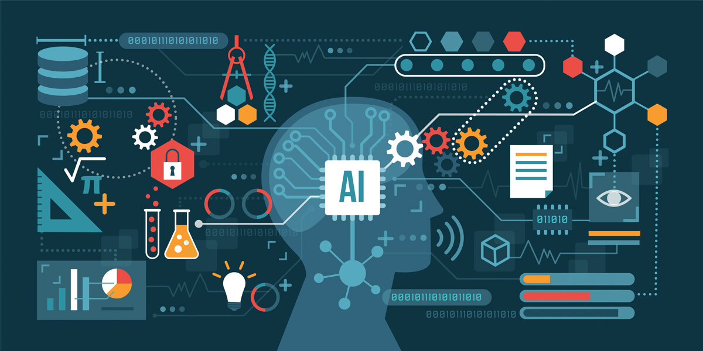

Artificial intelligence and machine learning
Author: Pham Vo Dong
What does it do?
In the digital era, people seem to be lazier and lazier, so almost all work is done by the computer, which can resolve the problem faster thanks to the computer's brain that can calculate the algorithms in a few seconds. That is the consequence of the progressing advancement of machine learning (ML) and artificial intelligence (AI). The father of machine learning is Alan Turing in full Alan Mathison Turing, (born June 23, 1912) in London (Britannica, 2021), a British mathematician and computer scientist major establishing the first machine learning system called bombe. And the term "artificial intelligence" was coined in the 1950s after his research was published at the time; he must be incognito because this was the government secret. From that, AI has grown deeply embedded in many aspects of society, and it frequently runs in the background of our electronic gadgets. AI machine learning is represented as experiential "learning" combined with human intelligence (ResearchGate, 2021), which can study and develop analysis progress through computational algorithms. This process is as same as raising the baby, which people should take care of in little things of the "toddler AI" to make it become good children in the future (see appendix 1 for the working of AI). However, the knowledge of AI is proportional to the development of data which constantly improves multiple times in a second. Therefore, AI can easily access many fields of people's lives, such as E-commerce, advertising, entertainment, and digital personal assistants. In the E-commerce and advertising industries, AI plays an essential role in the tool hooking the customers to keep using their product or services because of the recognition algorithms in the AI, which allow learning the previous research and purchase and provide a personal recommendation for each person. And it is crucial in optimizing products, planning inventory, and logistic industries. Moreover, AI helps improve the experiential of the user into the entertainment platform like Netflix, YouTube, Facebook, and web search engine. Like E-commerce, AI studies the customer's habits and brings the best advice for the new content. In addition, the application people always use AI, the digital personal assistants. Smartphones employ artificial intelligence to deliver services as relevant and personalized as feasible and virtual assistants have grown commonplace, answering inquiries, making recommendations, and assisting with daily tasks. Moreover, some smart homes, cities, and infrastructure are established using AI to operate. In 2016, the incredible project in the scientific movie was the AI robot called Sophia of Hanson Robotics. Sophia, the first robot citizen, is a Saudi Arabian, and her birthday is February 14, 2016 (Wikipedia, 2021). She is a human-like robot that can show all the feelings like a human. When she interacted with people to communicate, it looked like the speech of humans. Hence, Sophia is opening the hybrid era in which people will live with robots like the science fiction movie in the future. Looking at the rapid development of AI brings the vision of all transportation in the world using self-driving cars, reducing the rate of vehicle accidents. The electric vehicle is the best option for the green vehicle because the world has been transformed into a green world that uses green energy. In addition, the electronic vehicle easily allows applying AI self-driving technology more than the traditional vehicle. Consequently, AI is becoming more innovative than before thanks to the big data-industrial because more data means more speed and intelligence; therefore, AI plays an essential role in human living conditions.
What is the likely impact?
The benefits of AI have changed how the world is working, which is becoming a technological revolution affecting all people, including the bourgeoisie (business) and the proletariat (individual). In recent years, AI has had a substantial potential impact on global economic activity, increasing many countries and cooperation finance. According to McKinsey Global Institute research, an estimated 70% of organizations may have implemented at least one type of AI technology due to the positive results of AI in industrialized countries - 20 to 25% in net economic gains (McKinsey and Company, 2021) - because many businesses are shifting to using AI technology to run their businesses, which is faster and more efficient than doing so manually. In addition, AI brings good efficiency into the Company and has impacted society in the advantages. For example, our workplace has significantly increased productivity by AI while also augmenting the jobs humans can accomplish, which can do all the dangerous jobs. Therefore, people have free up time to increase happiness and job satisfaction. Moreover, AI improves health care service and security. Big data will solve the problem of medicine and pharma, and people could save up to 100 billion dollars annually under the prediction of McKinsey (Bernard Marr and Co, 2021). And the rate of crime decreased because of the increase in AI security. According to the Awake the NDR Security Division of ARISTA, AI security was a technology trend in 2020. It will continue moving forward because it augments the shrinking cyber workforce besides helping save time hunting for threats. The statistics showed that 54 per cent of critical alerts are completely investigated (Awake the NDR Security Division of ARISTA, 2021), which is done automatically by AI. Consequently, the world completely changes; from 2017 to 2037, 7 million existing jobs will be replaced by AI, but it could create 7.2 million jobs. However, AI will become the fundamental technology for improving other things such as AR, VR, robotics, and computers.
How will this affect you?
As mentioned above, Ai impacts all people globally, becoming an indispensable role in human life day by day. It quickly captures the image of people who use AI in their daily lives. The most typical application of this technology is the virtual assistant in their smartphones, such as Siri on iPhone, Google Assistant on Android, and Alexa on Amazon. These assistants help me and people around me manage the multitasking convenience. I use my voice to request the command, and AI takes care of the rest. For instance, when I say "set the meeting on Microsoft Teams at 10 am", AI opens the Teams Microsoft and sets the meeting at 10 am, which is done automatically, and I can review the command and commit it without any problems. In addition, some AI bots are used for recognizing the melody, speech, finding out the song, or adding the subtitle, which lets people live carefreely. However, it has many challenges using these technologies. I need to be good at languages because AI learns the specified action to give the clear command for AI knowing what to do. In the future, AI will be more and more important in human life, which will be brighter and brighter that can be compared with the most intelligent system that is the human brain. And that future is not far because nowadays the technologies are developing unstoppable and perhaps in the future people will live in the cyberpunk environment with the AI like Blade runner 2049, or we will use them as entertainment such as "Westworld", or the wrong ways AI will dominate us, but in the fact that AI has a significant impact on the evolution of human.
Reference
Britannica, 2021, artificial intelligence, viewed 5 Dec 2021 https://www.britannica.com/technology/artificial-intelligence/Is-strong-AI-possible
ResearchGate, 2021, Machine Learning and Artificial Intelligence: Definitions, Applications, and Future Directions, viewed 5 Dec 2021 https://www.researchgate.net/publication/338827846_Machine_Learning_and_Artificial_Intelligence_Definitions_Applications_and_Future_Directions
Wikipedia, 2021, Sophia (robot), viewed 5 Dec 2021 https://en.wikipedia.org/wiki/Sophia_(robot)
McKinsey and Company, 2021, Modeling the global economic impact of AI, viewed 5 Dec 2021, https://www.mckinsey.com/featured-insights/artificial-intelligence/notes-from-the-ai-frontier-modeling-the-impact-of-ai-on-the-world-economy"
Bernard Marr and Co, 2021, What Is The Impact Of Artificial Intelligence (AI) On Society?, viewed 5 Dec 2021 https://bernardmarr.com/what-is-the-impact-of-artificial-intelligence-ai-on-society/#:~:text=Artificial%20intelligence%20can%20dramatically%20improve,creativity%20and%20empathy%20among%20others
Awake the NDR Security Division of ARISTA, 2021, AI Security, viewed 5 Dec 2021 https://awakesecurity.com/glossary/ai-security/#:~:text=AI%20security%20refers%20to%20tools,on%20similar%20or%20previous%20activity.
SAS, 2021, Artificial Intelligence What it is and why it matters, viewed 5 Dec 2021
PWC, 2021, A I will create as many jobs as it displaces by boosting economic growth, viewed 5 Dec 2021
Appendix 1